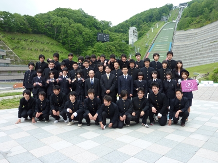
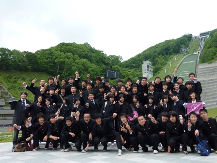
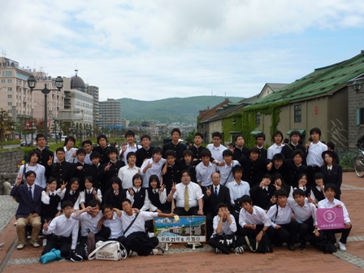
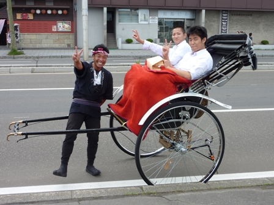
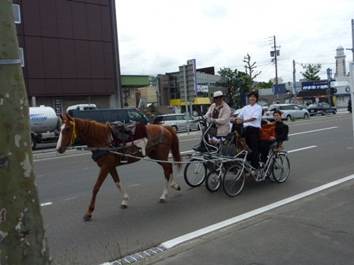

今日は最終日（５日目）を報告します。
全日空ホテルを出発後、「大倉山ジャンプ台」へ行ってきました。


今回、３回目の集合写真です。（写真：上 A組、下 E組）

リフトに乗って、上から見た写真です。（カメラマンは田中君）
迫力満点でした！！

その後、小樽へ移動しました。
今回、最後の集合写真（写真：C組）を撮ったあと、自由散策でした。
集合場所で待っていると・・・・

人力車に乗って登場した生徒が！そして、しばらく経つと・・・

今度は馬車に乗って別の生徒が登場しました！
もちろん、走っている道は一般道路です。
生徒それぞれが色々な方法で、小樽を満喫していました。